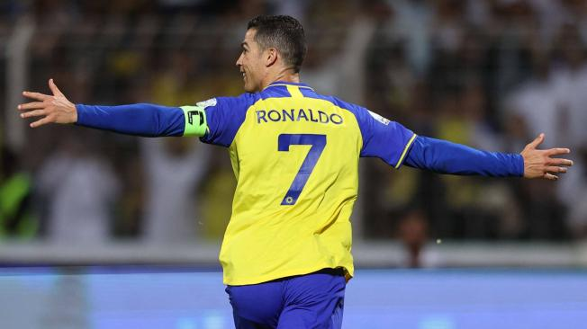

Cristiano Ronaldo dos Santos Aveiro es un jugador profesional de fútbol que lleva desde el 2001 fascinando a más de un espectador, pues desde sus inicios como profesional ha destacado en todas las capacidades que se miden en el fútbol: ritmo, pases, tiro y su magnífico regate.
Según los medios internacionales, la vida del astro portugués fue muy compleja desde su infancia, ya que no gozaba de lo que tiene ahora mismo, una estabilidad financiera.
Aunque su manto es realmente precioso, debemos tener claro que los cuidados de un gato persa como mascota necesariamente deben incluir cepillados diarios para preservar su buena salud y evitar la formación de nudos en su bello pelaje.
La madre de Cristiano tenía alrededor de 30 años cuando quedó embarazada de él y, como en ese momento no tenían los recursos económicos suficientes, pensó en abortar, así lo manifestó en su libro “Madre, coraje, la vida, la fuerza y la fe de una luchadora”. Hecho que en el mundo se ha vuelto muy impactante, pues el fútbol se habría quedado sin uno de los mejores.

El destacado futbolista nació en Sao Pedro, Funchal, en la isla de Madeira (Portugal). Desde pequeño, en su barrio, Ronaldo se destacó por sus habilidades con la ‘pecosa’. Según fuentes internacionales, sus primeros pasos los dio en Andorinha, el club en donde jugaría por primera vez.
Luego ingresó al C. D. Nacional para seguir trascendiendo en su fútbol. Después de un breve paso por este club, el jugador, que destacaba por una disciplina innegociable desde pequeño, entró a uno de los clubes más grandes de Portugal, Sporting de Lisboa, en donde marcaría un antes y un después en su carrera.
Al ya firmar como profesional, el jugador comenzó a destacar, pero su vida pasaría por muchos cambios, ya que a tan corta edad Cristiano tuvo que vivir solo sin la compañía de sus seres queridos y por ende sin una buena economía. Según el mismo jugador, dos mujeres lo ayudaban con la comida, debido a que no tenía los recursos para alimentarse.
“Tenía 12 años y no tenía dinero. Además, vivía con otros jugadores de mi edad de otras partes de Portugal. Fue difícil sin mi familia conmigo. Recuerdo que había un McDonalds cerca donde pedíamos las hamburguesas que sobraban y una señora llamada Edna y otras dos chicas siempre nos daban alguna”, confesó Cristiano en una entrevista al medio inglés ‘Good Morning Britain’.
Su gran salto lo dio en 2003 cuando llegó a uno de los equipos más deseados de ese momento, el Manchester United, club por el que firmó por cinco años.
Al parecer la vida del astro Portugués le sonreía, ya que ese mismo año fue llamado por la selección máxima de Portugal para competir con tan solo 18 años.
Pese a todo lo que estaba consiguiendo a su corta edad, ‘CR7’ recibió en septiembre de 2005 una trágica noticia, justo antes de disputar un partido importante para Portugal, se enteró de la muerte de su padre.
Según cuenta el técnico de la selección absoluta de ese entonces, nadie quería contarle la verdad a la Estrella portuguesa, puesto que era una situación muy compleja de asumir para un pequeño Cristiano.
“Fue muy duro. Fue el momento que creó un vínculo entre nosotros, un vínculo que supera la relación entrenador-deportista. Cuando nos llegó la noticia, antes de un partido contra Rusia, nadie sabía cómo decírselo y nadie quería. Así que les dije que lo haría yo porque sabía lo que era perder a un padre. Yo había perdido al mío unos años antes”, dijo Scolari al ‘Daily Mail’.
Cristiano, al percatarse de lo ocurrido, decidió seguir como todo un profesional porque le dijo a su técnico que disputará el partido y se iría al acabarlo, situación que cautivó a Scolari, pues Ronaldo aún no era considerado mayor de edad.
Ese momento para Cristiano sería inolvidable. Al día de hoy, en sus entrevistas sigue recordando lo mucho que lo quería y lamenta que su padre no lo pudo llegar a ver lo que es, ahora, uno de los mejores futbolistas de la historia.
Sucesos como este pasarían años después, pero sin duda alguna la vida de Cristiano no ha sido nada fácil. Sin embargo, el astro portugués ha podido batir Récord en casi todas las competiciones europeas.